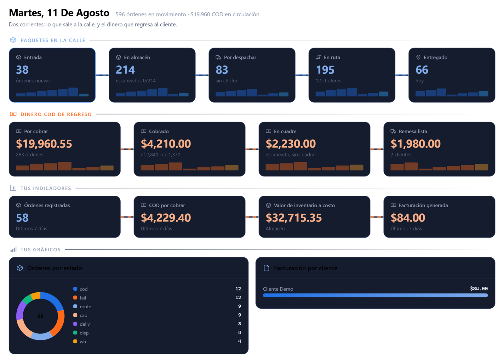
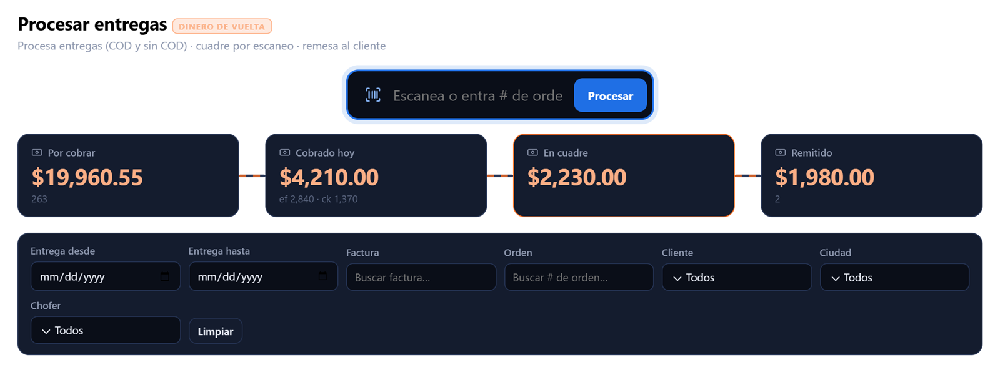

Del pedido a la puerta, y del dinero de vuelta
Un operador de logística no hace una sola cosa: recoge, almacena, consolida, transporta, entrega, cobra en la puerta y factura. Teikem cubre las siete, en la misma plataforma, sin que el pegamento sean hojas de cálculo y llamadas.
Sin compromiso. Una llamada corta para entender su operación antes de enseñarle nada.

El día, paso a paso
Lo que en la mayoría de las empresas está repartido entre cuatro programas y una libreta, aquí es una sola línea que se puede mirar en cualquier momento.
-
01
Entra la orden
Del cliente por su portal, de una llamada o de otro sistema por el API. Con su contrato y su tarifa ya aplicadas.
-
02
Se recibe y se ubica
Escaneo de entrada, ubicación en almacén o paso directo de muelle a muelle si es cross-docking. La mercancía nunca está «por ahí».
-
03
Se despacha
Asignación a chofer y vehículo, ordenamiento de paradas y la ruta al teléfono. Con las excepciones del día real: el cliente que no estaba, la dirección que no existe.
-
04
Se entrega
Firma, fotos y GPS en el sitio. Entrega parcial línea por línea y razón tipificada cuando algo falla, que es la mitad de las veces.
-
05
Se cobra y se cuadra
El efectivo cobrado en la puerta queda abierto en la liquidación del chofer hasta que se remesa y el total cuadra. Después, facturación.
Todo el mundo mirando el mismo número
El despachador, el de almacén, contabilidad y el dueño dejan de discutir cifras distintas: hay una sola operación y una sola versión de lo que pasó.
El dinero de regreso también es parte de la entrega
En cobro contra entrega, el problema no es marcar «entregado»: es que el efectivo que recogió el chofer aparezca completo al final del día. Teikem lo persigue: lo que se cobró en la calle queda abierto en la liquidación de quien lo cobró hasta que se remesa y cuadra contra lo que registró el sistema.
Lo mismo con la evidencia. La prueba de entrega no se archiva para que nadie la mire: se archiva para el día que el cliente reclame que no le llegó.
- Ciclo COD completo, del cobro en la puerta a la remesa.
- Liquidación por chofer y por ruta, con lo que falta a la vista.
- Prueba de entrega archivada y disponible en segundos.
- Facturación conectada, sin volver a teclear lo mismo.

Trece módulos, y usted enciende los que usa
No hay dos operaciones iguales: una cobra por recogido y otra por entrega, una hace cross-docking y otra almacena. Cada empresa enciende lo suyo y apaga el resto — sin versiones a medida ni pantallas que sobran.
Clientes y contratos
Tarifas, condiciones y acuerdos de servicio por cliente.
Órdenes de transporte
Del pedido a la entrega, con su estado en todo momento.
Viajes y rutas
Planificación, ordenamiento de paradas y seguimiento en vivo.
Flota y choferes
Quién conduce qué, con qué vigencias y qué mantenimiento le toca.
Almacenes
Ubicaciones, movimientos, recolección y kárdex.
Cross-docking
Consolidación de carga que solo pasa de muelle a muelle.
Inventario y trazabilidad
Por lote y serie, con la genealogía de qué salió de qué.
App del conductor
La ruta en el teléfono, funcionando sin señal.
Prueba de entrega
Firma, fotos, GPS y entrega parcial línea por línea.
Portal de clientes
Su cliente ve sus envíos y su evidencia sin llamar a nadie.
Facturación y liquidación
Cobro contra entrega, remesa y cierre por chofer.
Compras y equipos
Suplidores, órdenes de compra y equipo en alquiler.
Tableros e indicadores
Los suyos: campos, informes y gráficos propios, sin programar.
Lo que separa un sistema de logística de uno que aguanta la calle
La calle no tiene internet
Muelles de carga, sótanos y carreteras sin cobertura. La ruta se descarga entera y lo que pasa afuera se guarda en el teléfono y espera. Un sistema que exija conexión acaba sustituido por una libreta.
Reintentar sin duplicar
Cuando vuelve la señal, la cola se vacía en orden. Cada operación viaja con su clave de idempotencia, así que un reintento no cobra dos veces el mismo envío.
Mapas abiertos
OpenStreetMap en vez de un servicio por consumo: su factura no crece con cada parada que planifica.
El flujo es dato, no código
Usted enciende las etapas que usa y define desde cuál se puede cancelar. Cambiar cómo trabaja no debería ser un proyecto de programación.
Permisos, doble factor y auditoría
Hay dinero de por medio. Permisos por rol, segundo factor y auditoría en tres planos: qué cambió, quién lo cambió y qué pasó en seguridad.
Se conecta con lo que ya tiene
API para integrar con contabilidad, comercio electrónico o el sistema del cliente. Nadie va a botar su contabilidad porque llegamos nosotros.
Si su operación toca la calle, es para usted
- Transportistas y couriers que despachan rutas todos los días y liquidan choferes todas las semanas.
- Distribuidores que almacenan, preparan pedidos y entregan con flota propia.
- Operadores de última milla con cobro contra entrega y prueba de entrega que el cliente exige.
- Operadores logísticos que trabajan para varias empresas y necesitan los datos de cada una separados de verdad.
Y si ya tiene un sistema que cubre una parte, Teikem se puede conectar con él en vez de pedirle que lo bote.
Teki mira la operación cuando usted no puede
Un tablero enseña números; hay que saber leerlos y hay que acordarse de mirarlos. Teki es el asistente de Teikem y hace lo contrario: le dice en una frase qué necesita su decisión hoy, y trabaja con los datos de su operación —no con generalidades de internet.
- Le resume el día. Qué está atascado, qué vence en una hora y qué dinero falta por cuadrar, sin que usted tenga que buscarlo.
- Redacta lo repetitivo. El correo al cliente cuando una entrega falla, con la razón y la evidencia ya puestas. Usted lo lee y lo manda.
- Clasifica lo que llega. Razones de no entrega, incidencias y notas del chofer, ordenadas solas para que el informe del mes salga del dato y no de la memoria.
- Contesta preguntas del sistema en lenguaje normal, sin que nadie tenga que armar un informe para averiguar una cifra.
Dos reglas que no se negocian. La decisión final es de una persona: Teki propone, nunca ejecuta por su cuenta. Y su información no sale a pasear: son los datos de su empresa, no material de entrenamiento de nadie.
¿Cuánto COD tengo cobrado y sin cuadrar?
$2,230 de 14 órdenes, todas de ayer y todas del mismo
chofer. Está escaneado pero no remesado.
Abrir la liquidación →
¿Y qué tengo que decidir hoy?
Tres cosas: 83 órdenes esperan chofer, 3 entregas vencen en menos de una hora y 7 documentos de flota vencen esta semana.
Una demostración con su operación en la cabeza
No es una presentación grabada. Antes de enseñarle nada preferimos entender cómo despacha, cómo cobra y dónde se le va el tiempo — y si Teikem no le resuelve el problema, se lo decimos.
- Contestamos dentro del próximo día laborable.
- Conversamos media hora para entender la operación.
- Le enseñamos el sistema con sus casos, no con los nuestros.